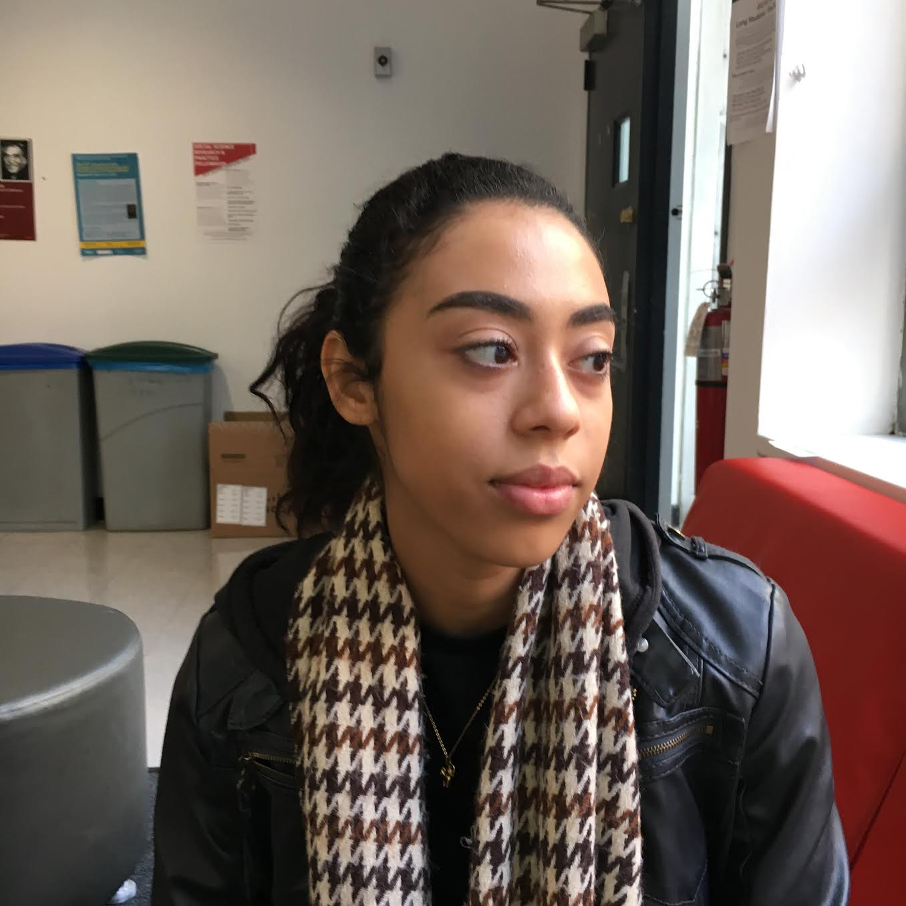

Alana Perez was in high school when she first took notice of a deep-seated sense of sadness and discomfort, a feeling she did not yet have the words to put a name to. This feeling made itself known in just about all social situations - while she was hanging out with friends, going to class, even spending time with family. It would rise up unexpectedly, from some hidden cavern in her gut, and fog up her chest, her throat, the roof of her mouth, initiating an undeniable desire to break down and withdraw from her surroundings.
“I didn’t know what was wrong with me, but I knew something was wrong with me,” said the now-20-year-old. “It was after years of enduring and becoming so frustrated that I decided with my mom that I should see a therapist.”
Perez has been attending regular talk therapy sessions with a specialist in New York City for three years now, something she would not have had access to if her family insurance didn’t cover the cost of psychiatric care. She has since been diagnosed with depression and a panic disorder, which she regulates with the help of medication.

“I think it’s the city’s responsibility to make those opportunities available to everyone,” she said, careful to note that not all who seek mental health assistance in New York City actually receive it.
It was with this same mentality that Mayor Bill de Blasio and First Lady Chirlane McCray developed their platform for mental health reform, something that became a major talking point in this year’s mayoral election. Supporters of the mayor have praised the program - known as ThriveNYC - for its comprehensive approach to mental health reform, welcoming people dealing with all kinds of mental illness (even in its mildest forms) to take advantage of the city’s initiative. It is this same quality of the ThriveNYC program, however, that has earned de Blasio a fair amount of criticism from his opponents, including the former Republican nominee in this year’s election for mayor, Assemblywoman Nicole Malliotakis.
Under Mayor deBlasio, ThriveNYC works to train community leaders to better understand their community’s mental health needs, places mental health specialists in public schools to identify and treat early symptoms of mental illness, and creates a network of existing treatment centers to make assistance more accessible to those who would ordinarily have a difficult time finding reliable help.
“Current programs designed to help mentally ill individuals do not target the severely mentally ill who are most likely to become homeless, hospitalized, incarcerated and create a danger for themselves, the public and the police,” Malliotakis argued at a debate event in October. She, along with several other critics of the ThriveNYC initiative, have claimed that in dedicating resources to all of the 20% of New Yorkers who deal with some form of mental illness in any given year, those struggling with what Malliotakis has described as “serious illnesses,” including bipolar disorder and schizophrenia, will not receive adequate care.
While on the campaign trail, Malliotakis vowed to divert funds from ThriveNYC (which currently has an unprecedented budget of $818 million under the de Blasio administration) to unspecified initiatives that would help those struggling with severe mental disorders engage productively as members of their communities as well as avoid negative encounters with law enforcement officials.
“[Malliotakis’ stance] is extremely problematic” said Perez, “It’s perpetuating the idea that people with bipolar disorder or schizophrenia are violent, which is part of the stigma that these people have to deal with every day.”
A representative from NYC Well - a crisis outreach program which acts as a facet of the ThriveNYC initiative - declined multiple requests for comment. In an email exchange with Dan Goldberg of Politico New York, however, a representative for the mayor, Olivia Lapeyrolerie, assured New Yorkers that “this Administration has made an unprecedented $850 million commitment to make sure New Yorkers struggling with mental illness or substance abuse disorder have access to the care they need.”
“ThriveNYC focuses on promoting mental health, preventing illness, detecting problems early and treating all severities of mental illness,” Lapeyrolerie continued.
Even the Mayor himself has been careful to assure New Yorkers that ThriveNYC was developed with the intention to constantly expand and develop, eventually meeting the mental health needs of the city it strives to serve.
“It will take years to address the problem the way it should be addressed. But we need to start now, we need to start aggressively,” said Mayor de Blasio in a press release.
Just this past September, First Lady Chirlane McCray announced the introduction of several new programs and services under the ThriveNYC umbrella (which together with require an initial investment of $4.8million), including a new 24-hour drop-in center, new trainings for Health + Hospitals physicians, and increased support services for LGBT youth in city public schools.
One of Malliotakis’ biggest criticisms of the Mayor’s initiative (one that she repeated throughout her campaign and that still exists on her website) was that many of the mentally ill New Yorkers that “the de Blasio administration has refused to treat end up incarcerated in city jails.”
A 2014 report conducted by the mayor’s Task Force on Behavioral Health and Criminal Justice System suggests that there may be some truth to this claim - despite decreasing incarceration rates of New Yorkers overall, incarceration rates of mentally ill individuals has gone up in recent years, from 29% of all inmates in 2010 to 38% in 2014.
In response to these findings, the de Blasio administration launched a training program that would ideally help law enforcement officials identify signs of potential mental or behavioral disturbances and direct residents to treatment facilities, rather than prisons. While not explicitly related to the growing imprisonment rates of mentally ill New Yorkers, the ThriveNYC initiative was established the year following the aforementioned report.
More recently, the de Blasio administration has promised to open two diversion centers in the city in 2018, which will serve as an alternative to incarceration for mentally ill residents who have committed a minor crime.
“I think [initiatives like these are] extremely important,” Perez said. “Mental health has been talked about a lot more recently, I think because it’s a huge problem.”
Neither Mayor de Blasio nor his opponents have been afraid to point out the shortcomings of the ThriveNYC program as it currently exists, but officials across party lines agree that New York City has the potential to act as a model for mental health reform nationwide. First Lady McCray has already begun to push for a coalition of city leaders throughout the country to increase national awareness of the importance of mental health reform.
“If you care about your city, you should care about its citizens and their mental health,” said Perez. “We are the ones who are going to enact change, which we can’t do if our mental health is not in the right state.”